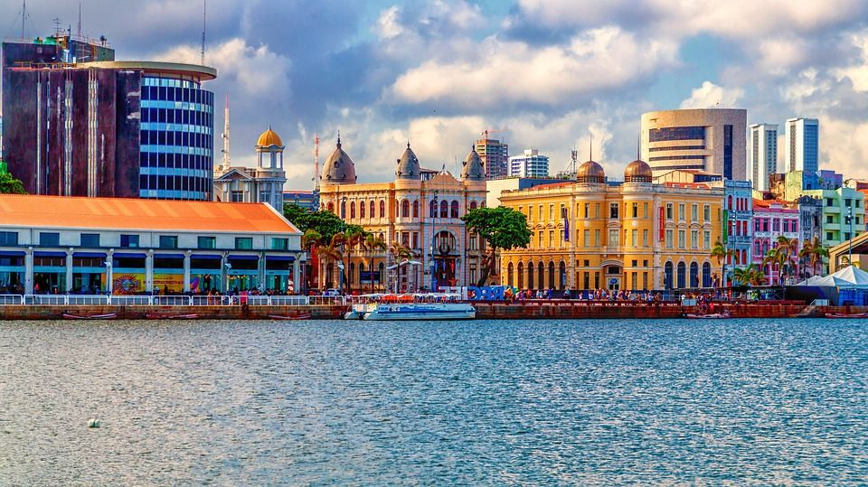

O que significa o Marco Zero?
O Marco Zero é um monumento geográfico localizado na Praça da Sé e tem o formato hexagonal, com cada um dos seus lados apontando para uma região.
É a partir do Marco Zero que se conta a numeração de todas as ruas da cidade e a quilometragem de todas as rodovias do Estado.

A importância do monumento Marco Zero
O monumento foi pensado com a intenção de organizar um sistema. O marco zero, portanto, tornou-se o ponto de referência na ordenação numérica de quilometragem das vias que se iniciam na capital paulista, assim como medição de linhas ferroviárias, aéreas e numeração telefônica.